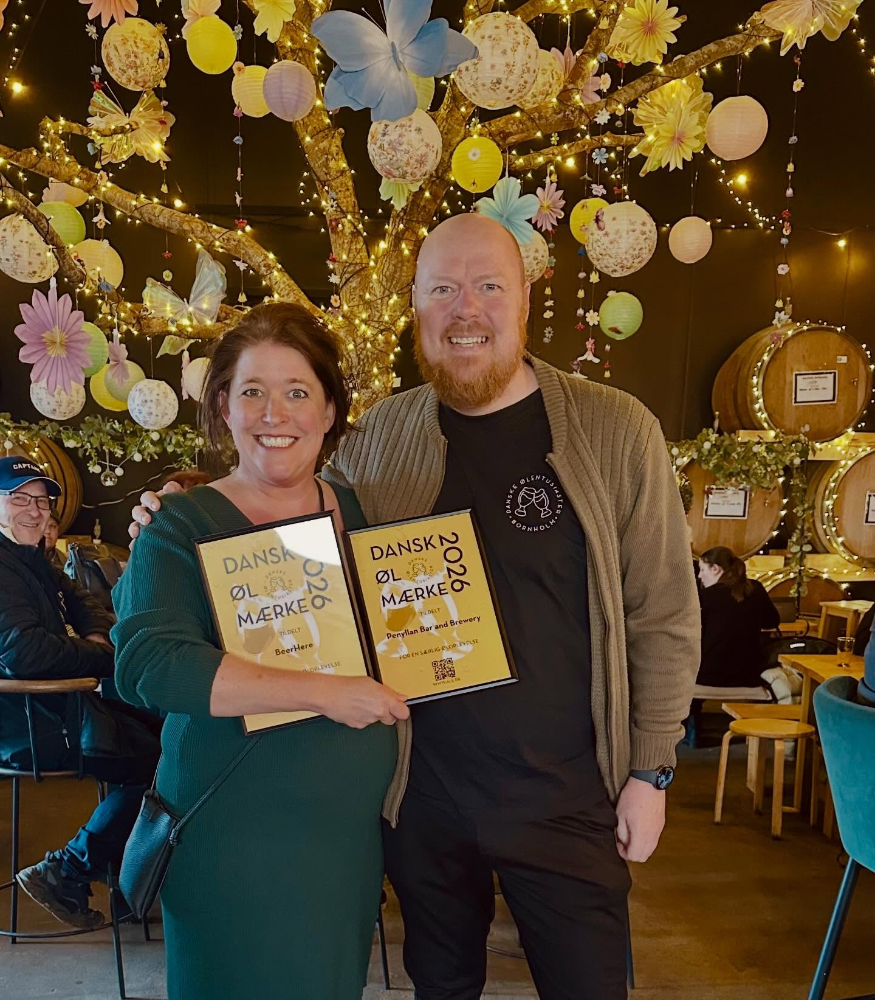
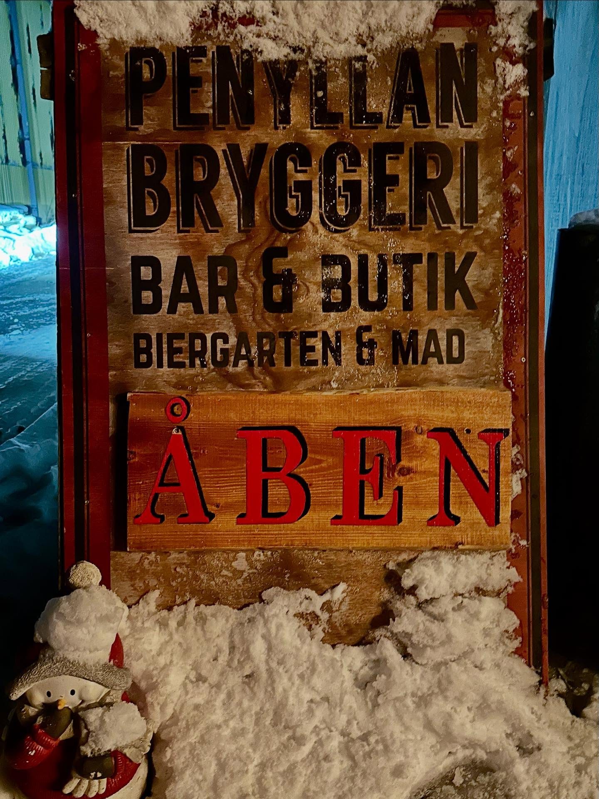

Udvalgte fredage
Fredagsbar med Levende Musik
Lokale musikere spiller i tapstuen, mens solen går ned over havnen.


Hvis flaget er ude, betyder det, at vi har åbent — så er du altid velkommen til at kigge ind på en øl. Hen over året holder vi desuden en række events. Følg med på vores Facebook-side for datoer, ændringer i åbningstider og detaljer om mad og arrangementer.

Vi tager imod Dankort, VISA og Mastercard, samt MobilePay og kontant.


Ved betaling med kontant tager vi imod danske og svenske kroner samt euro. For euro og svenske kroner bruger vi dagskursen uden gebyr eller nedskrivning af kursen.
Vi serverer hjemmelavede burgere og sprøde pommes frites — også en vegetarisk burger. Året rundt har vi desuden et udvalg af lækre Pipers kettle chips.
Følg vores Facebook-side for flere detaljer om mad og events.

Vi holder løbende events i bar og butik — her er et udpluk. Se altid vores Facebook-side for datoer og detaljer.
Udvalgte fredage
Lokale musikere spiller i tapstuen, mens solen går ned over havnen.

Juli
Musik, mad og masser af fadøl på kajen — årets store sommerevent.

August
Smag hele sortimentet på én dag, inklusive specialbryg fra fadkælderen.

December
Hygge, glögg og julesnaps mellem bryggekedlerne.
April
Sæsonens påskeøl smages sammen med en tur rundt i bryggeriet.
Løbende hele året
Vi tapper løbende nye specialbryg — følg med på Facebook for hvad der lige nu står på hanerne.
Oktober
En hyggelig aften med smagning af fadlagrede specialøl og udvalgte whiskyer.
31. december
Vi fejrer det nye år med bobler, bål og fyrværkeri over havnen.
En og en halv time i selskab med bryggeriets ejere, mens øllet flyder frit. Du bliver guidet rundt på bryggeriet, mens du smager øllene og hører historier om bryggeriets og øllets historie. Vi brygger endda en lille øl undervejs. Turen slutter i fadkælderen, hvor vi fortæller om vild gæring og fadlagring.
Vi anbefaler ikke at køre bil bagefter. Vi har alkoholfrie alternativer, hvis du ikke drikker øl.
Turen er på dansk, med de sidste 30 minutter på engelsk.
250 kr. pr. person
Har du ikke tid til den lange tur, anbefaler vi den korte version. Vores brygger tager dig gennem en smagning af udvalgte øl og en rundvisning på bryggeriet, mens han fortæller om øl-brygning og bryggeriets historie.
Turen er på dansk. Alkoholfrie alternativer kan tilbydes.
190 kr. pr. person
Kan du ikke deltage på en af vores faste turdage, kan du booke en privat tur. Prisen er 250 kr. pr. person (minimum 10 personer / 2.500 kr.) for den lange tur.
Ønsker du en kortere tur, eller er I mere end 20 personer, så kontakt os for en specialpris. Ture kan arrangeres på dansk eller engelsk.
Booking er ikke nødvendig — køb blot din billet i baren. Kommende datoer for de faste ture finder du løbende på vores Facebook-side.
Skriv til os på jessica@penyllan.com eller send en Facebook-besked.
Penyllan Taproom
Vestkajen 5
3770 Allinge
Danmark